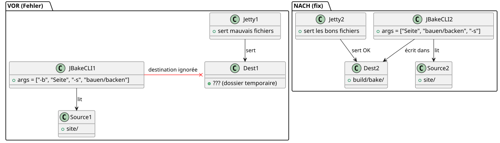

Warum zeigte `serve` eine hässliche Website an, während `publishSite` perfekt war
Publié le 22 April 2026
Kennst du diesen Moment, wenn deine lokale Seite überhaupt nicht gut aussieht, aber sobald sie online bereitgestellt wird, ist alles bestens? Das ist mir mit meinem Gradle-JBake-Plugin passiert. Die Aufgabe`serve`Es zeigte quadratische Buttons, dunklen Text auf schwarzem Hintergrund und ein seltsam fehlendes CSS. Doch`publishSite`Erzeugte dieselbe Website, und zwar tadellos. Der Schuldige war weder das CSS, noch der Browser, noch der Cache. Es war eine Zeile Kotlin-Code — und eine schlechte Angewohnheit bei den Kommandozeilenargumenten.
- Klopfen
-
[]
Die Szene: vier Screenshots, zwei Renderings
Es war nach einem Systemabsturz. Ich hatte vier Screenshots gemacht, um die lokale Wiedergabe zu vergleichen (./gradlew serve`auf`localhost:8820) mit dem Online-Rendering (`publishSite`Auf GitHub Pages). Zwei Screenshots pro Seite: oben und unten.
Lokales Rendern
Kopf der Seite— Die Schaltflächen Project und Template sindkleine, rechteckige, mit den Standardfarben (blau und grün). Die Karte Start Writing hat eineinfarbiger schwarzer Hintergrund, ohne Rahmen.

Seitenfuß— Der Untertitel "Letzte Artikel und Ressourcen" istquasi-unlesbar, zu dunkel auf schwarzem Hintergrund. Die Daten unter den Blog-Bildern („17. Oktober 2013“ usw.) sindabwesend.

Online-Rendering
Seitenkopf— Die gleichen Tasten sindgroße, Schafe, flashiges Neon-Grün, Text in Großbuchstaben. Die Karte hat einabgerundeter weißer Rahmen mit Schattenwurf.

Fußzeile— Der Untertitel istgut lesbar. Die Daten sindsichtbare. Die Artikelkarten habenabgerundete Eckenund die Titel sindfett.

Erster Reflex: das Thema. Ich verwende ein dynamisches Themensystem (hell, dunkel, high-contrast) basierend auf`localStorage`. Vielleicht hat der lokale store ein High-Contrast-Theme ausgelöst? Nein. Ich hatte bereits geschriebenhttps://cheroliv.com/blog/2025/0098_preloading_css_variable_post.html[ein ganzer Artikel über das Vorladen der Themen], ich weiß, wie das funktioniert. Und selbst im High-Contrast-Modus hätte die CSS-Struktur (ovale Buttons, Schatten) da sein müssen. Sie war nicht da.
Zweiter Reflex: Der Browser-Cache. Nein, ich hatte den Test mit sauberen Profilen durchgeführt. Der Unterschied blieb bestehen.
Dritter Reflex:`serve`lieferte nicht die gleichen Dateien wie`publishSite`.
Die Diagnose: serve zeigte nicht auf den richtigen Ordner.
Mein Gradle-Plugin`bakery`hat zwei Hauptaufgaben:
-
bake: erzeugt die statische Seite in`build/bake/` -
serve: startet einen lokalen Webserver -
publishSite: schiebt`build/bake/`zu GitHub Pages
Die Divergenz konnte nur von`serve`. Si publishSite`veröffentlichte den richtigen Inhalt, das ist, dass`build/bake/`war gut. Wenn`serve`Er zeigte etwas anderes, denn er war nicht nützlich`build/bake/.
Schauen wir uns den Code an. In`SiteManager.kt`, die Aufgabe`serve`ist wie folgt definiert:
tasks.register("serve", JavaExec::class.java) { task ->
task.apply {
mainClass.set("org.jbake.launcher.Main")
classpath = jbakeRuntime
environment("GEM_PATH", jbakeRuntime.asPath)
jvmArgs(/* ... */)
args = listOf(
"-b", file(site.bake.srcPath).absolutePath,
"-s", layout.buildDirectory.get()
.asFile.resolve(site.bake.destDirPath)
.absolutePath
)
}
}org.jbake.launcher.Main`ist der Einstiegspunkt der JBake 2.7.0 CLI. Die Idee: zu passen-b`für den Quellordner und`-s`für den Zielordner, dann den Server-Modus starten. Aber…
Die Ursache: JBake CLI funktioniert nicht so.
JBake 2.7.0 wartet aufpositionale Argumentefür Quelle und Ziel, dann optionale Flags. Die Signatur ist:
jbake <source> <destination> [options]Aber in meinem Code habe ich geschrieben:
args = listOf("-b", "/path/to/site", "-s", "/path/to/build/bake")JBake interpretierte das so:
-
-b→ parses das Flag \"bake\" (Bool), verbraucht -
/path/to/site→ wird positionelles Argument 1 (Quelle) -
-s→ parset das Flag "serve" (boolesch), Server gestartetsofort -
/path/to/build/bake→ wird zu einem verwaisten Argument, das ignoriert oder falsch interpretiert wird
Ergebnis: JBake nahm`/path/to/site`wie Quelle,berücksichtigte das Ziel nichtbereitgestellt (build/bake), und verwendete sein Standardverzeichnis (oft`./output`oder eine temporäre Kopie). Die Datei`css/styles.css`Der Build war also überschrieben oder ignoriert, und es wurde ein altes Standard-CSS (ohne die benutzerdefinierten Variablen, ohne die abgerundeten Ecken, ohne die Schatten) bereitgestellt.
Im Vergleich,bake et publishSite`verwenden denoffizielles Gradle-JBake-Plugin(`jbake-gradle-plugin) der ordentlich schreibt in`build/bake/`über die Gradle-API. Sie gehen nicht über die CLI.
Die Lösung: positionale Argumente, keine Flags
Die Korrektur ist trivial — sobald man weiß. Es genügt, Quelle und Ziel als positionale Argumente zu übergeben, dann`-s`zum Schluss:
args = listOf(
file(site.bake.srcPath).absolutePath,
layout.buildDirectory.get()
.asFile.resolve(site.bake.destDirPath)
.absolutePath,
"-s"
)Das ist alles. Drei Zeilen geändert, Fehler behoben.
</think>
Nach lokaler Veröffentlichung des Plugins (publishToMavenLocal), un `./gradlew serve`Starte JBake mit der korrekten Syntax:
jbake /home/user/project/site /home/user/project/build/bake -sUnd dieses Mal dient der in JBake integrierte Jetty-Server dem Inhalt von`build/bake/`— identisch mit dem, was online veröffentlicht wird.

Schnelle Überprüfung mit curl
Um sicherzustellen, dass der Server den richtigen Inhalt bereitstellt, ein einfaches`curl`bestätigt dass`index.html`enthält`data-bs-theme="light"`und dass`build/bake/css/styles.css`wiegt tatsächlich 31 402 Byte — identisch zur von erzeugten Datei`bake`.
$ ./gradlew serve
# Dans un autre terminal :
$ curl -s http://localhost:8820/ | grep data-bs-theme
<html ... data-bs-theme="light" ...>
$ curl -I http://localhost:8820/css/styles.css
HTTP/1.1 200 OK
Content-Length: 31402
Content-Type: text/cssDas lokale Rendering ist jetztpixel-identischzum bereitgestellten Rendering
Warum war dieser Bug tückisch?
Siehst du, warum es schwierig war, es zu fangen?
-
Kein expliziter Fehler: JBake ist nicht abgestürzt. Es 'funktionierte', einfach mit einem falschen Ordner.
-
Der Build funktionierte:`./gradlew bake`erzeugte korrekt die Dateien in`build/bake/`.
-
Die Bereitstellung funktionierte.:`publishSite`schob den guten Inhalt online.
-
Nur
servewar kaputt: die Entwicklungsaufgabe, die man ständig zum Iterieren verwendet. -
Die Gewohnheit des
-key valueAls Entwickler, ist man durch Jahre der Unix-CLI geprägt.-o output`,-i input). JBake CLI ist eine Ausnahme — Quelle und Ziel sind positionell.
Fazit
Wenn Sie ein Gradle-Plugin warten, das JBake (oder jedes CLI-Tool) umhüllt,Lies die Dokumentation der Argumenteauch wenn du denkst, sie zu kennen. Eine implizite Annahme(-s= "set destination") kann Sie Stunden visuellem Debugging kosten.
Der Fix bestand wörtlich darin, zu ändern
args = listOf("-b", src, "-s", dest) // ❌ BUGen :
args = listOf(src, dest, "-s") // ✅ FIXDrei verschobene Tokens, und meine lokale Website ist wieder genauso schön wie die Produktionswebsite.
Lektion: Wenn die Darstellung zwischen lokal und prod ohne ersichtlichen Grund abweicht, verdächtigen Sie zuerst das pipeline — nicht das CSS, nicht den Browser, und erst recht nicht das Framework. Oft ist es gerade der Schritt vor der Darstellung, der betrügt.